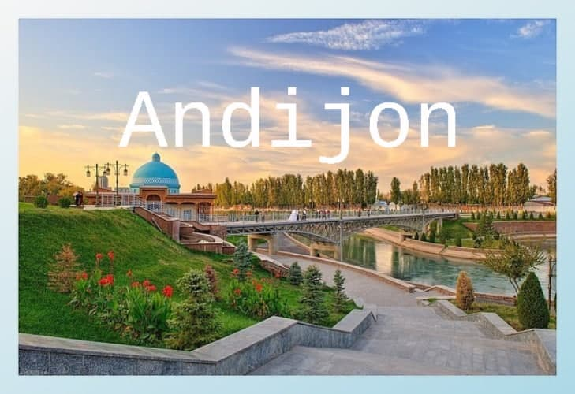

Andijon Oʻzbekistonning Andijon viloyatidagi shahardir. Viloyatning maʼmuriy, iqtisodiy va madaniy markazi.
Oʻzbekistonning yirik industrial shaharlaridan biri. Shahar Fargʻona vodiysining sharqida. Andijonsoy yoqasida,
dengiz sathidan 450 m balandlikda joylashgan. Iyulning oʻrtacha harorati 27 °C — 28 °C, yanvarniki — 3 °C.
Aholisi 333,4 ming kishi (2000). Maydoni 74,3 km2. Andijon shahri shimoli-gʻarbdan Oltinkoʻl tumani, gʻarbdan
Buloqboshi tumani va janubi-sharqdan Andijon tumani bilan chegaradosh.
Tarixi
Bosh sahifa